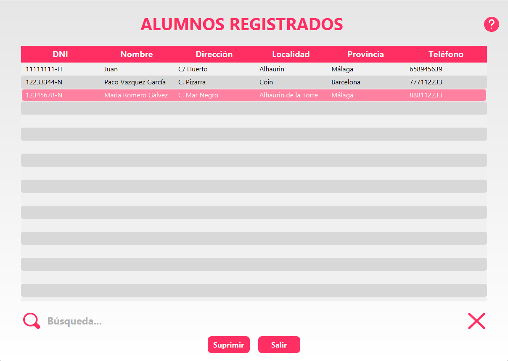
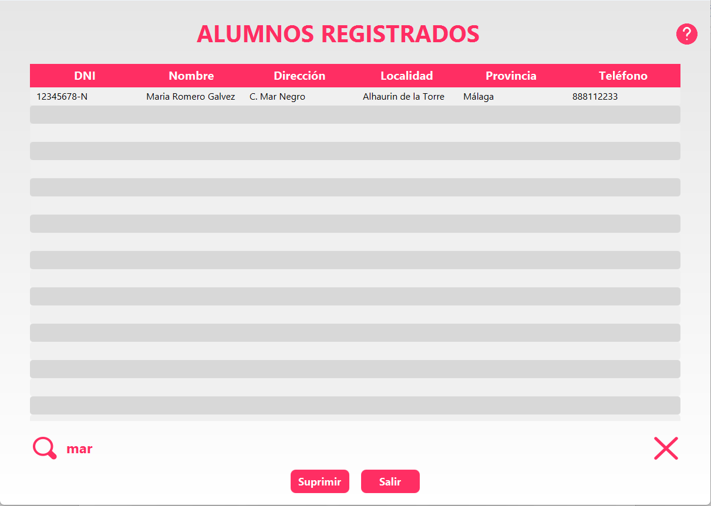
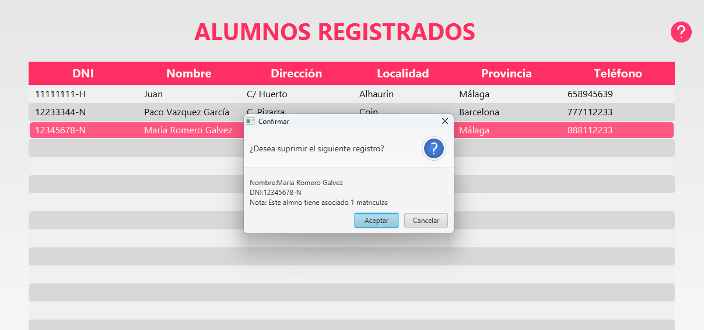

1.Función principal: Este módulo nos permite la administración de los diferentes alumnos registrados en nuestra base de datos. Para ello contamos con una tabla principal, una sección de búsqueda y un botón de salida al menú principal de la aplicación.

2. Tabla principal
Aquí podemos encontrar una tabla con una lista de todos los alumnos registrados, clasificados por los campos DNI, Nombre, Dirección, Localidad, Provincia y Teléfono. Se haya resaltado con una banda color rosa el alumno que está seleccionado.

3. Sección de búsqueda
En la sección de búsqueda contamos con:
Un campo de búsqueda donde podemos introducir el texto mediante el cual queremos filtrar la tabla principal de mostrado de datos. No requiere de presionar el ‘Enter’ para proceder al filtrado de datos, la aplicación de manera automática va filtrando los datos conforme se van introduciendo los caracteres.
Un botón en forma de X la cual nos permite limpiar el campo de búsqueda para poder realizar otra.
Un botón con el texto ‘Suprimir’ que nos da la posibilidad de eliminar a un alumno registrado. Hay que tener en cuenta que antes de la eliminación del alumno nos aparecerá una ventana de confirmación para evitar eliminar accidentalmente a un alumno registrado que además nos mostrará la cantidad de matrículas en las que el alumno está registrado, el DNI y el nombre del alumno para cerciorarnos de que hicimos clic en el alumno deseado.
